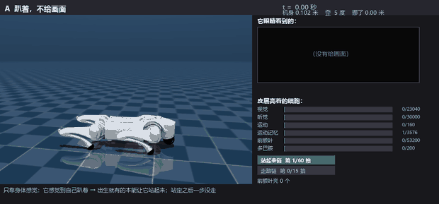
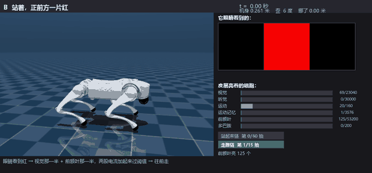
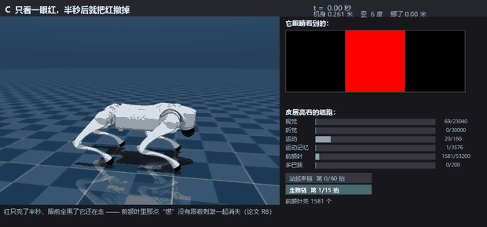
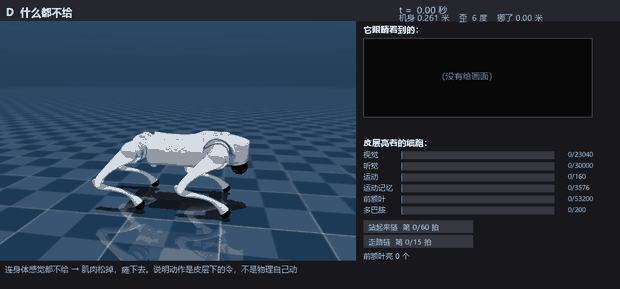

A brain-shaped system - not a network trained on examples - placed in a simulated body.
Brains are born with largely pre-specified cortical wiring, and the only rule locally available to a synapse is correlation between the cells it connects. Machine-learning agents instead optimise a global objective. How far does the biological combination reach on its own?
Brains are born with largely pre-specified cortical wiring, and the only rule locally available to a synapse is correlation between the neurons it connects; machine-learning agents instead optimise a global objective. How far does the biological combination reach on its own? We built a system of 143,796 model cortical neurons connected by 308,809 pre-specified “instinct” synapses, driving a simulated quadruped with no reward, no error signal, no gradient and no training loop. Placed prone, it stands up on 5/5 network seeds; shown red, it walks toward the stimulus on 5/5, over a median 1.73 m; with no sensory input it collapses; with the instinct table cleared the same brains can neither stand nor approach (0/5). Silencing the prefrontal population abolishes visually guided walking (0/200 ticks, 5/5) while leaving a wired reflex unchanged. The behaviour is produced by the cortex rather than by the stimulus: removing the recurrent step removes the action while sparing the reflex. Adding innate structure grows the repertoire without retraining; a 200-cell dopamine population writes one new sense-to-action link during the life of a single brain; gaze tracking emerges from static look-at rules and a motion-onset reflex rather than being written down. No rule in the system lowers a weight, and the acquired walk does not yet stay upright; both are reported rather than hidden.
Recorded from the model, not drawn by hand. Open the four-act page →

Only body sense tells it that it is lying down. The inborn connections push it up. It stands and then does not take a step.
趴着，不给画面：只靠本体感就知道自己趴着，出生就有的连线把它撑起来；站定之后一步没走。

Eyes see red. The visual half and the prefrontal half of the wiring each contribute current; together they cross threshold and it walks forward.
站着，正前方一片红：视觉那半 + 前额叶那半，两股电流加起来过阈值，于是往前走。

Red is shown for half a second and then the world goes black - and it keeps walking. What lit up in the prefrontal population does not vanish with the stimulus.
只看一眼红，半秒后撤掉：眼前全黑了它还在走 —— 前额叶里那点“想”没有跟着刺激一起消失。

With no sensory input at all the muscles go slack and the body sinks. The movement is a command from the cortex, not physics.
什么都不给：连身体感觉都不给，肌肉松掉、瘫下去 —— 动作是皮层下的令，不是物理自己动。
Reported as a gap, not hidden: the acquired walk does not stay upright for long. Five taught seeds all fall eventually; in the test phase, some seeds topple between tick 45 and tick 101. The cause is narrowed down in Section 4.6 - the current the prefrontal population sends to the fifteen gait cells lands exactly on the gait chain’s firing threshold (0.850), so a drift in the ongoing thought can knock the chain out. Damping that one inborn link fixes one seed and breaks the other three, so it was not applied.
Reported as a gap, not hidden: no rule in the system ever lowers a weight. The three decay settings that were tried make the model fall earlier, not later.
The paper also lists the experiments whose outcome contradicted the prediction (Section 4.5), and says for every number which script produced it and where the log is.
Every figure in the paper is produced by a named script and leaves a log. The repository carries all 292 logs and the scripts that wrote them.
cd model python 核对_论文数字.py # reads logs/ and compares every number against the paper (~seconds) python 核对_论文数字.py 重跑 # actually re-runs R1 and checks the live result (~6 min) python 看_大脑开车.py # drives the robot again and regenerates the playback page
Core dependencies: Python 3 + NumPy. The body uses MuJoCo; the figures use matplotlib + Pillow.
Everything runs on CPU. See docs/复现说明.md for the per-result table (R1–R11, forty-odd scripts).
@misc{li2026bornwired,
title = {Born wired: innate cortical connectivity plus local plasticity is enough to stand, walk and look},
author = {Li, Zhiwen},
year = {2026},
note = {Preprint, Research Square ID rs-11070398},
url = {https://github.com/leeR1ven/born-wired-cortex}
}
Machine-readable version: CITATION.cff. Licence: MIT.
大脑一出生就带着大量已经接好的皮层连接，而一个突触在局部能用的规则，只有“一起亮过的细胞之间连接变强”。机器学习走的是另一条路：优化一个全局目标。 这两样东西只靠生物的配方，能走多远？本文建了一个 143,796 个模型皮层神经元、308,809 根出生就写好的“本能”突触的系统，驱动一具仿真四足身体， 没有奖励函数、没有误差信号、没有梯度、没有训练循环。结果：搁着放下，5/5 个种子自己站起来；给看红色，5/5 个种子朝红色走过去（中位数 1.73 米）； 完全不给感觉输入，身体瘻下；把本能表清空，同样的脑子既站不起来也走不了（0/5）；把前额叶那群细胞静默，视觉引导的行走直接消失（0/200 拍，5/5）， 而本能反射丝毫不受影响。 一个 200 细胞的多巴肝群，在一个脑子的一生里写下一条全新的“感觉→动作”连接；眼神跟踪是从静态的“盯着看”规则和运动起始反射里自己长出来的。 系统里没有任何一条规则会把权重调低；学会的走路还不能长时间保持直立。这两件事都写在论文里，没有藏。
怎么自己验一遍：各图各数字都有对应脚本和日志，在 model/ 和 logs/ 里。见 docs/复现说明.md。